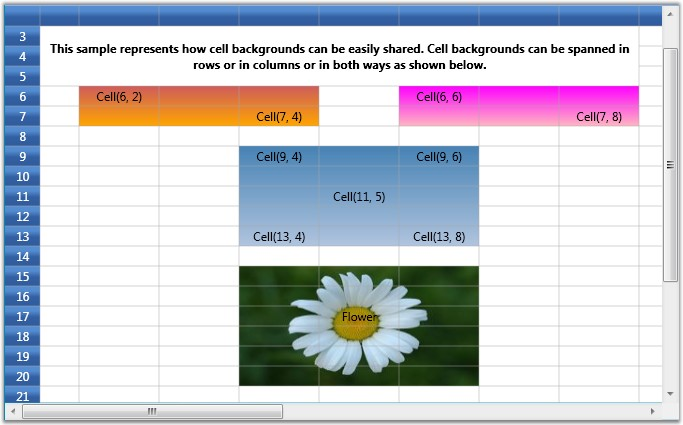

You can create custom range of cells inside a Grid, which is termed as banner cells. Let us see how to create Banner Cells
Cell Spanned Backgrounds
Essential Grid lets you span the given background across multiple cells either row-wise, column-wise or both. The information about all the cell spans for a given grid is maintained by the GridModel.CellSpanBackgrounds. Each entry represents an object of CellSpanBackgroundInfo class that defines a cell span. This class exposes properties such as background, border, and more to customize the cell span.
You can also trigger QueryCellSpanBackgrounds event to create and customize cell spans.
Creating Cell Spans
This example creates three cell spans with gradient backgrounds and a fourth cell span with an image background created through the QueryCellSpanBackgrounds event.
|
[C#]
CellSpanBackgroundInfo cellspan1 = new CellSpanBackgroundInfo(6, 2, 7, 4); cellspan1.Background = new LinearGradientBrush(Colors.IndianRed, Colors.Orange, 90); grid.Model.CellSpanBackgrounds.Add(cellspan1);
CellSpanBackgroundInfo cellspan2 = new CellSpanBackgroundInfo(6, 6, 7, 8); cellspan2.Background = new LinearGradientBrush(Colors.Magenta, Colors.LightPink, 90); grid.Model.CellSpanBackgrounds.Add(cellspan2);
CellSpanBackgroundInfo cellspan3 = new CellSpanBackgroundInfo(9, 4, 13, 6); cellspan3.Background = new LinearGradientBrush(Colors.SteelBlue, Colors.LightSteelBlue, 90); grid.Model.CellSpanBackgrounds.Add(cellspan3);
grid.QueryCellSpanBackgrounds += new GridQueryCellSpanBackgroundsEventHandler (grid_QueryCellSpanBackgrounds);
void grid_QueryCellSpanBackgrounds(object sender, GridQueryCellSpanBackgroundsEventArgs e) { if (e.CellRowColumnIndex.ColumnIndex == 4 && e.CellRowColumnIndex.RowIndex == 15) { CellSpanBackgroundInfo item = new CellSpanBackgroundInfo(e.CellRowColumnIndex.RowIndex, e.CellRowColumnIndex.ColumnIndex, 20, 6); item.Background = new ImageBrush(GetImage(@"common\Images\Grid\BannerCells\back2.jpg")); e.Range = new List<CellSpanBackgroundInfo>(); e.Range.Add(item); e.Handled = true; } } |
Output
The following output is generated using the code above.

Figure 46: Cell Span
See Also